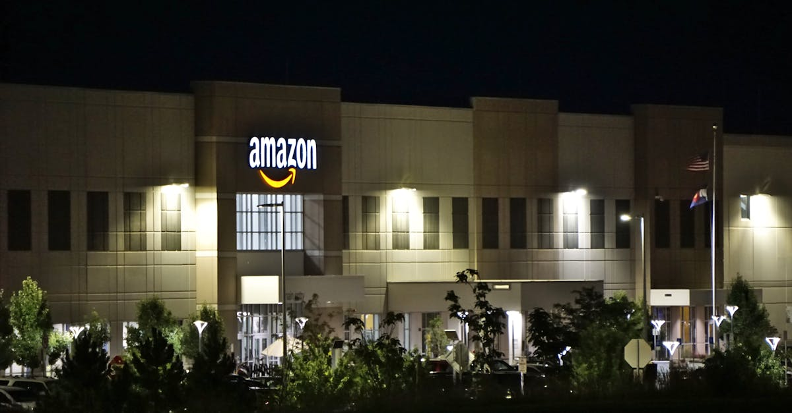
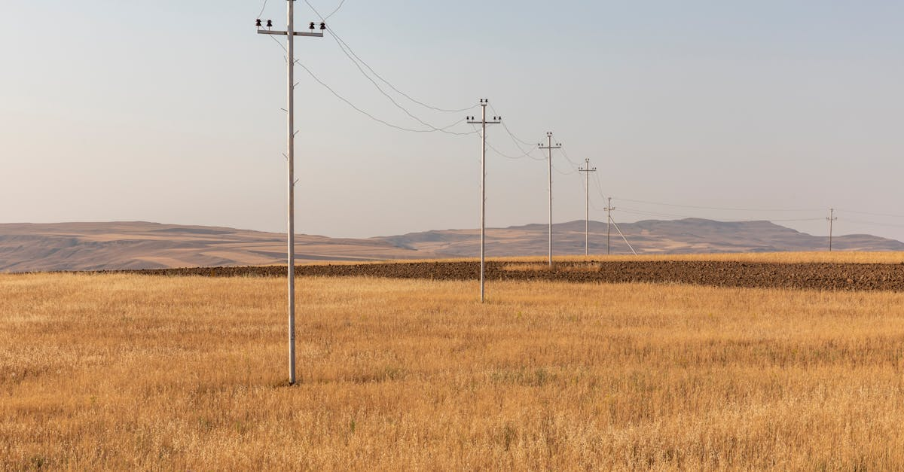

Amazon met la main sur Globalstar : les détails de l'acquisition à 90 dollars
Le 14 avril 2026, Amazon a officialisé le rachat de l'opérateur satellitaire Globalstar pour un montant de 90 dollars par action, valorisant l'entreprise à plusieurs milliards de dollars. Cette acquisition stratégique marque une escalade majeure dans la guerre que se livrent les géants technologiques pour le contrôle de la connectivité mondiale par satellite. L'action Globalstar, qui végétait sous les 2 dollars il y a encore trois ans, a connu une ascension fulgurante portée par les spéculations autour d'un possible rachat par un acteur majeur de la tech.
Andy Jassy, PDG d'Amazon, a qualifié cette acquisition de « pièce manquante du puzzle Project Kuiper », faisant référence au programme de constellation satellite d'Amazon lancé en 2020. Project Kuiper, qui vise à déployer 3 236 satellites en orbite basse pour fournir un accès Internet haut débit mondial, manquait jusqu'ici d'un élément crucial : un réseau terrestre de stations-relais déjà opérationnel. C'est précisément ce que Globalstar apporte dans la corbeille, avec ses 24 satellites en orbite et surtout son réseau de plus de 25 stations terrestres réparties sur tous les continents.
La prime offerte par Amazon — Globalstar s'échangeait autour de 60 dollars avant les rumeurs d'acquisition — témoigne de l'urgence stratégique ressentie par le groupe de Jeff Bezos. Avec SpaceX Starlink qui compte déjà plus de 6 000 satellites en orbite et plus de 4 millions d'abonnés dans le monde, Amazon est en retard significatif dans cette course à la connectivité spatiale. L'acquisition de Globalstar permet de combler ce retard en combinant l'infrastructure existante de l'opérateur avec les capacités de production et de lancement massif d'Amazon. Les analystes de Morgan Stanley estiment que cette opération pourrait accélérer le calendrier de déploiement de Project Kuiper de 18 à 24 mois.
Les conditions de l'opération prévoient un paiement intégralement en numéraire, sans composante en actions Amazon. Cette structure témoigne de la volonté d'Amazon de boucler rapidement la transaction sans diluer ses propres actionnaires. Le closing est attendu pour le troisième trimestre 2026, sous réserve des approbations réglementaires habituelles — notamment celle de la Federal Communications Commission (FCC) aux États-Unis et des autorités de concurrence dans les marchés clés. Les analystes de JPMorgan estiment que les obstacles réglementaires seront limités, Globalstar et Amazon n'ayant pas d'activités significativement chevauchantes dans les mêmes segments de marché.

Project Kuiper contre Starlink : état des lieux de la bataille orbitale
La rivalité entre Project Kuiper (Amazon) et Starlink (SpaceX) est devenue l'un des feuilletons technologiques les plus suivis de la décennie. SpaceX a pris une avance considérable grâce à la cadence de lancement sans précédent de ses fusées Falcon 9 et Starship. Au printemps 2026, Starlink dispose de plus de 6 500 satellites actifs, offre une couverture dans plus de 80 pays et génère un chiffre d'affaires estimé à 12 milliards de dollars annuels. La qualité du service s'est considérablement améliorée, avec des débits descendants atteignant régulièrement 300 Mbps et une latence inférieure à 20 millisecondes dans les zones bien couvertes.
Face à ce mastodonte, Amazon a longtemps semblé en difficulté. Les premiers prototypes de satellites Kuiper n'ont été lancés qu'en octobre 2023, et le déploiement commercial a pris du retard par rapport au calendrier initial. Cependant, Amazon dispose d'atouts considérables que Globalstar vient renforcer. Premièrement, la puissance financière d'Amazon est quasi illimitée : Jeff Bezos a personnellement engagé plus de 10 milliards de dollars dans le projet. Deuxièmement, Amazon peut intégrer Kuiper dans son écosystème commercial de manière unique — bundling avec Amazon Prime, intégration avec AWS pour les entreprises, utilisation dans les entrepôts et les véhicules de livraison autonomes.
L'acquisition de Globalstar apporte également un avantage technique sous-estimé : les licences spectrales. Dans le monde des télécommunications spatiales, les fréquences radio sont une ressource rare et hautement réglementée. Globalstar détient des droits sur des bandes de fréquences en bande S et en bande L qui sont particulièrement adaptées à la communication avec des appareils mobiles à faible puissance. Ces licences, qui ont mis des décennies à être obtenues, auraient coûté une fortune et des années de procédures à Amazon s'il avait dû les acquérir par les voies classiques. C'est un actif stratégique dont la valeur dépasse largement le prix d'acquisition.
D'autres acteurs entrent également dans la course. OneWeb, soutenu par le gouvernement britannique et Bharti Airtel, dispose de sa propre constellation de 648 satellites. Telesat au Canada et la constellation européenne IRIS² complètent un paysage de plus en plus concurrentiel. Mais la bataille principale reste celle entre Amazon et SpaceX, deux entreprises dont les fondateurs respectifs — Bezos et Musk — entretiennent une rivalité personnelle qui alimente la course technologique.
Les implications pour l'intelligence artificielle et le cloud computing
L'acquisition de Globalstar par Amazon s'inscrit dans une stratégie plus large qui dépasse le simple accès Internet grand public. L'une des motivations les plus profondes d'Amazon réside dans la synergie entre la connectivité satellite et Amazon Web Services (AWS), le leader mondial du cloud computing. Dans un monde où l'intelligence artificielle exige des quantités toujours croissantes de données et de puissance de calcul, la capacité à connecter des centres de données, des capteurs IoT et des utilisateurs dans les régions les plus reculées devient un avantage concurrentiel décisif.
AWS a déjà lancé AWS Ground Station, un service qui permet aux clients de télécharger des données satellite directement dans le cloud Amazon. Avec Kuiper et Globalstar, cette infrastructure s'enrichit considérablement. Imaginez un réseau de capteurs environnementaux déployés dans la forêt amazonienne, transmettant en temps réel des données à un modèle d'IA hébergé sur AWS pour détecter la déforestation illégale — le tout sans aucune infrastructure terrestre traditionnelle. Ce type de cas d'usage, rendu possible par la convergence satellite-cloud-IA, représente un marché potentiel estimé à 50 milliards de dollars d'ici 2030.
L'edge computing constitue un autre domaine où la combinaison Kuiper-AWS pourrait s'avérer révolutionnaire. Au lieu de transférer toutes les données vers des centres de données centralisés, les satellites eux-mêmes pourraient embarquer des processeurs capables d'exécuter des inférences IA en orbite. Amazon a déposé plusieurs brevets en ce sens, décrivant des satellites équipés de puces Graviton (les processeurs propriétaires d'AWS) capables de traiter des flux vidéo, des données radar ou des communications en temps réel. Cette vision du compute in space transformerait fondamentalement l'architecture du cloud computing mondial.
Pour les entreprises d'IA, cette infrastructure offre la promesse d'un accès universel aux données. Les modèles de langage, les systèmes de vision par ordinateur et les agents IA ont besoin de données diversifiées et actualisées pour fonctionner efficacement. Un réseau satellite mondial permet de collecter et transmettre des données depuis des régions qui étaient jusqu'ici des angles morts informationnels — océans, zones polaires, déserts, forêts tropicales. Cette couverture complète pourrait engendrer une nouvelle génération de modèles d'IA plus robustes et plus représentatifs de la diversité du monde réel.

Minage de crypto-monnaies et blockchain dans les zones reculées
L'une des implications les moins discutées mais potentiellement les plus significatives de la guerre des satellites concerne le minage de crypto-monnaies. L'extraction de Bitcoin et d'autres crypto-monnaies basées sur le Proof of Work nécessite deux ressources fondamentales : de l'énergie bon marché et une connexion Internet fiable. Si l'énergie solaire et éolienne est souvent la moins chère dans les régions isolées — déserts, steppes, zones côtières venteuses — ces régions souffrent traditionnellement d'un manque de connectivité qui rend le minage impraticable.
La couverture satellite mondiale promise par Kuiper et Starlink change cette équation. Des fermes de minage pourraient être installées dans des régions offrant une énergie quasi gratuite — géothermie en Islande ou au Kenya, hydroélectricité dans les régions reculées du Canada ou de la Norvège, solaire dans le Sahara — tout en restant connectées au réseau Bitcoin grâce à une liaison satellite. Le coût de cette connectivité, bien que supérieur à la fibre optique, reste marginal par rapport aux économies réalisées sur l'énergie.
Certains projets pionniers exploitent déjà cette convergence. MARA Holdings (anciennement Marathon Digital) a annoncé en mars 2026 le déploiement d'une ferme de minage de 50 MW alimentée par l'énergie géothermique dans une zone reculée d'Éthiopie, connectée au réseau via Starlink. Les résultats préliminaires montrent un coût de production par Bitcoin inférieur de 40% à celui des installations traditionnelles aux États-Unis. Si ce modèle se généralise, il pourrait redistribuer la géographie mondiale du minage, actuellement concentrée aux États-Unis, au Kazakhstan et en Russie.
Au-delà du minage, la connectivité satellite ouvre des possibilités pour le déploiement de nœuds blockchain dans des zones isolées, renforçant la décentralisation des réseaux. Un réseau Bitcoin dont les nœuds sont répartis uniformément sur la surface du globe — y compris dans les régions les plus reculées — est intrinsèquement plus résilient qu'un réseau concentré dans quelques data centers urbains. La combinaison satellite-blockchain pourrait ainsi contribuer à la décentralisation véritable que les puristes de la crypto appellent de leurs vœux depuis les origines du mouvement.
Analyse financière : valorisation de Globalstar et retour sur investissement
L'acquisition de Globalstar à 90 dollars par action représente une valorisation totale d'environ 6,4 milliards de dollars, en tenant compte de l'ensemble des actions en circulation et des options diluées. Ce prix représente une prime de 50% par rapport au dernier cours coté avant les rumeurs d'acquisition. Pour les actionnaires de longue date de Globalstar, c'est une aubaine spectaculaire : ceux qui ont acheté le titre à 1 dollar en 2023 réalisent un gain de 8 900% en trois ans.
Mais Amazon paie-t-il trop cher ? Les analystes sont partagés. D'un côté, Globalstar en tant qu'entreprise autonome ne génère qu'un chiffre d'affaires modeste d'environ 250 millions de dollars par an, avec une rentabilité volatile. À un ratio prix/ventes de 25x, la valorisation paraît exubérante selon les métriques traditionnelles. D'un autre côté, la valeur de Globalstar ne réside pas dans ses revenus actuels mais dans ses actifs stratégiques : licences spectrales, infrastructure terrestre et expertise opérationnelle dans le domaine satellitaire.
Les modèles de valorisation de Bank of America estiment que l'intégration de Globalstar dans Project Kuiper pourrait générer une valeur actualisée nette de 15 à 25 milliards de dollars pour Amazon sur dix ans, grâce à l'accélération du déploiement de Kuiper et aux revenus synergétiques avec AWS. Dans cette optique, payer 6,4 milliards pour un actif qui en rapportera potentiellement quatre fois plus apparaît comme un investissement judicieux.
Pour les investisseurs particuliers, l'opération soulève la question des opportunités dans le secteur spatial. L'acquisition de Globalstar est le dernier en date d'une série de deals qui ont transformé l'industrie spatiale en terrain de chasse pour les géants de la tech. Les entreprises spatiales cotées en bourse qui restent indépendantes — Iridium Communications, Viasat, AST SpaceMobile — pourraient voir leur cours de bourse soutenu par des spéculations de rachat similaire. L'indice S&P Kensho New Economy: Space a d'ailleurs progressé de 4,7% dans la foulée de l'annonce Amazon-Globalstar, témoignant de l'effet d'entraînement sur l'ensemble du secteur.
L'impact sur l'action Amazon elle-même a été mesuré. Le titre a reculé de 0,8% le jour de l'annonce, une réaction typique lors d'acquisitions majeures où le marché s'interroge sur le prix payé et le retour sur investissement. Cependant, les analystes sell-side restent unanimement positifs sur le titre, avec un objectif de cours moyen de 245 dollars contre un cours actuel d'environ 210 dollars. L'acquisition de Globalstar est perçue comme un investissement stratégique de long terme dont les bénéfices ne se matérialiseront que progressivement, à mesure que Project Kuiper montera en puissance et que les synergies avec AWS se concrétiseront. Pour les investisseurs patients, c'est un catalyseur de croissance qui renforce la position dominante d'Amazon dans l'infrastructure technologique mondiale.

L'enjeu de la souveraineté numérique et les tensions géopolitiques
La consolidation du secteur satellitaire entre les mains de quelques géants technologiques américains — Amazon, SpaceX, et dans une moindre mesure Google avec son projet Taara — soulève des questions profondes de souveraineté numérique. Lorsque la connectivité Internet d'un pays dépend d'une constellation satellite contrôlée par une entreprise étrangère, la question du contrôle des données et de l'indépendance technologique devient un enjeu de sécurité nationale.
L'Union européenne a pris conscience de cette menace avec le lancement du programme IRIS² (Infrastructure for Resilience, Interconnectivity and Security by Satellite), doté d'un budget de 6 milliards d'euros. Cette constellation souveraine vise à garantir que l'Europe ne soit pas entièrement dépendante de Starlink ou de Kuiper pour sa connectivité stratégique. Cependant, le calendrier d'IRIS² — premiers lancements prévus en 2028 — laisse un vide que les acteurs américains s'empressent de combler.
La Chine développe parallèlement son propre réseau, la constellation Guowang, avec un objectif de 13 000 satellites. La Russie travaille sur Sphère. L'Inde déploie OneWeb India via sa participation dans le consortium britannique. Cette fragmentation de la connectivité spatiale en blocs géopolitiques rappelle les débuts d'Internet, lorsque les réseaux nationaux étaient cloisonnés avant la standardisation mondiale. Le risque d'un « splinternet spatial » — où chaque bloc dispose de sa propre constellation incompatible avec les autres — est réel et préoccupant.
Pour les investisseurs en crypto-monnaies, cette dynamique géopolitique a des implications directes. Les réseaux blockchain, par leur nature décentralisée, dépendent d'une connectivité mondiale ouverte pour fonctionner efficacement. Si la connectivité satellite se fragmente en blocs rivaux, la capacité des réseaux crypto à opérer de manière véritablement globale pourrait être compromise. À l'inverse, les protocoles capables de fonctionner à travers ces frontières numériques — via des technologies de communication peer-to-peer par satellite ou des réseaux mesh décentralisés — pourraient voir leur valeur augmenter considérablement.
Perspectives pour les investisseurs : comment se positionner sur la révolution satellite
L'acquisition de Globalstar par Amazon cristallise une tendance d'investissement qui devrait se poursuivre et s'accélérer dans les années à venir. Le marché de la connectivité satellite devrait atteindre 90 milliards de dollars d'ici 2030, selon les projections de Northern Sky Research, contre environ 30 milliards en 2025. Cette croissance tripartite — tirée par le haut débit grand public, l'IoT industriel et les services gouvernementaux — offre de multiples points d'entrée pour les investisseurs.
Voici les principales stratégies d'investissement à considérer :
- Actions des opérateurs satellite cotés : Iridium Communications (IRDM), Viasat (VSAT) et AST SpaceMobile (ASTS) sont les principales entreprises cotées du secteur. AST SpaceMobile, qui développe un réseau satellite capable de communiquer directement avec les smartphones standards, est considéré par beaucoup d'analystes comme le prochain candidat au rachat par un géant de la tech.
- Fournisseurs d'infrastructure spatiale : Rocket Lab (RKLB), qui fabrique les fusées Electron et Neutron, bénéficie directement de l'augmentation du nombre de lancements. L3Harris Technologies et Northrop Grumman, fabricants de composants satellite, offrent une exposition plus diversifiée au secteur.
- ETF thématiques : L'ARK Space Exploration & Innovation ETF (ARKX) et le Procure Space ETF (UFO) offrent une exposition diversifiée à l'ensemble de la chaîne de valeur spatiale, de la fabrication au lancement en passant par les services.
- Crypto-monnaies liées à la connectivité : Des projets comme Helium (HNT), qui construit un réseau de connectivité décentralisé, ou Filecoin (FIL), qui offre du stockage décentralisé, pourraient bénéficier de l'expansion de la connectivité mondiale.
En conclusion, l'acquisition de Globalstar par Amazon pour 90 dollars par action est bien plus qu'une simple opération de croissance externe. C'est un signal stratégique qui confirme que la bataille pour le contrôle de la connectivité mondiale est entrée dans sa phase décisive. Les investisseurs qui comprennent les implications croisées de cette révolution — pour le cloud, l'IA, les crypto-monnaies et la géopolitique — seront les mieux positionnés pour capturer la valeur créée par cette transformation sans précédent de l'infrastructure numérique mondiale. La convergence entre satellite, blockchain et intelligence artificielle ne fait que commencer, et les prochaines années promettent des développements aussi rapides qu'imprévisibles.